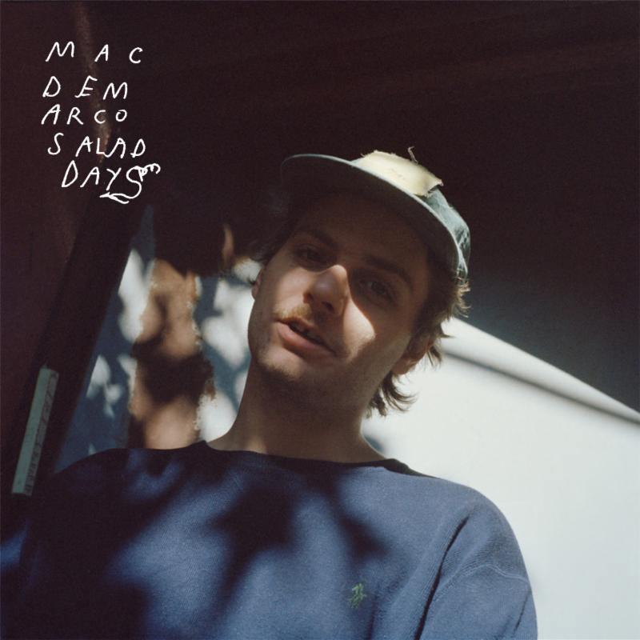
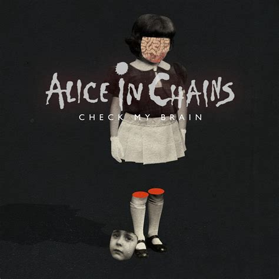
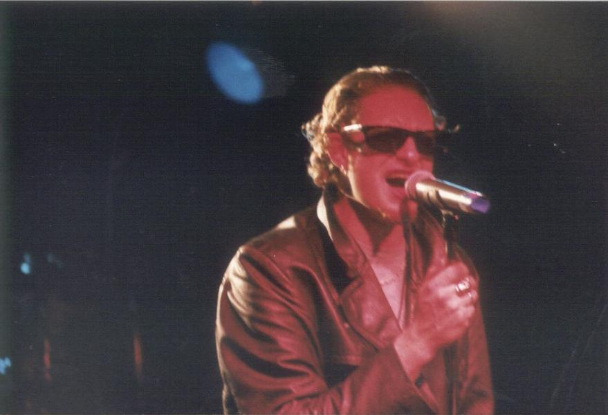
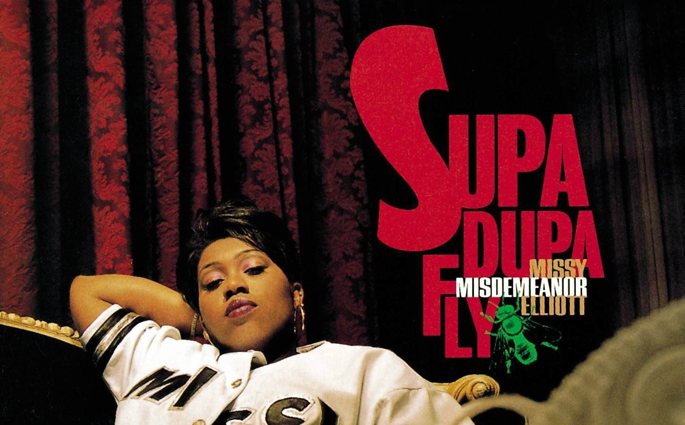

Music We Love
------Table of Contents------
- Mac DeMarco
- Alice in Chains
- Missy Elliot
- Music Videos
_____________________________________________________________________________________________________________________
Mac DeMarco

by Ernesto Guadarrama
Who is Mac DeMarco?
"Mac" DeMarco is a Canadian singer-songwriter, multi-instrumentalist and producer. DeMarco has released six full-length
studio albums, his debut Rock and Roll Night Club (2012), 2 (2012), Salad Days (2014), Another One(2015), This Old Dog
(2017), and Here Comes the Cowboy (2019). His style of music has been described as "blue wave" and "slacker rock", or, by
DeMarco himself, "jizz jazz".
Mac's Nardwar Interview
Mac DeMarco thrills Seattle Audience
The night ended with the psychedelic, dreamy track “Chamber of Reflection.” Typically during his closing song, DeMarco
jumps into the crowd or does something just as wild, but doubts were rising because the show was seated rather than
general admission. But what would a Mac Demarco concert be without a little crowd surfing? He managed to pull the
crowd out of their seats and cluster them together, and was then able to continue the tradition of the crowdsurf.

Chamber of Reflection
Great Songs!
- This Old Dog
- Cooking Up Something Good
- On the Level
_____________________________________________________________________________________________________________________
Alice in Chains

by Adelina Ceja
What is Alice in Chains about?💗
Alice in Chains is a grunge band that started in SEATTLE WASHINGTON . My brother describes their music as
sad, sickly, and whiney with the essense of a struggling, dying dog that's been mistreated their entire life.
The band was known for their abuse of heroin and it showed in their music how much in pain they were. Their
fans related to that and they gained popularity very quickly. Their songs were about how they were never going to make it out
of their addiction alive and their hopelessness in life. Jerry Cantrell, Alice in Chains were known on
occasion to mix up country and grunge together. This odd mixture of genres deemed to be unique and successful.

Lane Stanely in 1991
Lane Stanely and Jerry Cantrell
Lane Staley used to be the lead singer and co-songwriter, but sadly he passed away in 2002. His voice was
comparable to none and had such a unique amazing range. Lane's father wasn't in the picture when he was a child.
Growing up he was addicted to heroin. Jerry Cantrell was also a heroin addict and they used each other
to fuel their addiciton together. Later in life when Lane Stanely's career was starting to begin and he was
gaining fame, his girlfriend commited suicide by drug overdose. Not long after, Lane Stanely overdosed in Los
Angeles and died. Jerry Cantrell was the founder, lead guitarist, and main songwriter for Alice in Chains. He
was the other piece that kept the band together and what made it what it was.
Rare Alice in Chains Interview
My Favorite Songs!
- Man in the Box
- Would
- Down in a Hole
"Care not for the men
who wonder Straw that broke your back,
you're under Cast all them aside who care
Empty eyes and dead end stare"
_____________________________________________________________________________________________________________________
Missy Elliot

By: Nathanael R
Who is Missy
Missy Elliot; Song writer, singer, rapper, and producer.
Well know for her lyrical style, fashion, and eccentric outside the box music videos.
Misdemeanor (another name she goes by), has worked with and produced top charting hits with artist
like Timbland, Pharrell, and Aaliyah. She's won several grammies, MTV awards, BET awards, etc.
and was one of the first women to be put into Songwriters Hall of Fame.
She's Supa Dupa Fly
"The Rain (Supa Dupa Fly)", was one of the most popluar songs on Misdemeanors' album
Supa Dupa Fly. Released in 1997, it became a top 20's charting radio hit. The video,
was actually her first music video and it set the stage for what was to come for career.
The fashion and imagery of the Missy's music paved the way for alot of other artist.
"The Rain (Supa Dupa Fly)" Music Video

"Throw It Back", one of the most recent songs by Missy.
Represented as a single from her latest album entitled Iconlogy, Missy talks about the
platform and stage shes set and vision shes been about. While she hasnt released an
album since 2005, its clear that she hasnt taken any time off from perfecting her craft.
This video is a clear representation of not just her legacy in music, but of the legecy
of black culture in music.
"Throw It Back" Music Video
Missy Elliot Top Songs
- Hot Boyz (Da Real World 1998)
- Get Ur Freak On (missE...So Addictive 2001)
- Work It (Under Construction 2002)
- Lose Control (The Cookbook 2005)